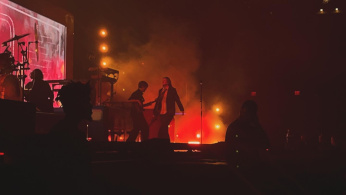
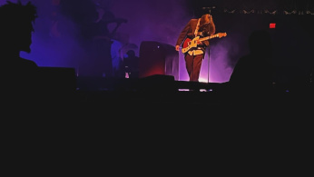

Like The Marías, I found girl in red in the midst of the bedroom pop popularity. At that time, she was a small artist with only 2 EPs out and unofficial SoundCloud songs. What I really enjoy about girl in red's music is that it's very "indie". The soft guitar strums with synths blend perfectly together. The older I got, the more her sound changed. Her old stuff was experimental as she was deciding what worked for her and what didn't. Her 2024 album, I'M DOING IT AGAIN BABY! shows off her refined sound--one that she is proud of. Her album, in my opinion, was good. It was enough to make me go see her perform at The Anthem in 2024.

Her performance was electric. She was always moving from one side of the stage to the other, making sure that every fan was able to see her. Her energy on stage made everyone jump and dance to all her songs. She also didn't miss fan interaction, as there was a small moment where she told jokes and stories she had, wondering about D.C. At the very end of the show, she came into the crowd to dance and left the crowd surfing back to the stage. It was a high-energy concert where everyone was moving. The reason this is one of my favorite experiences is that I went with my significant other, who also shared a liking for girl in red.
